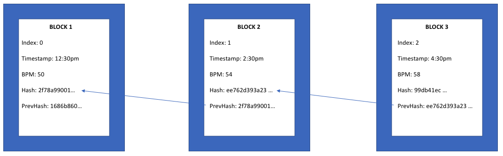
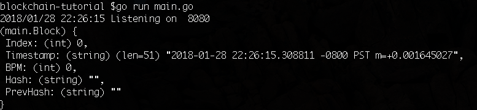

这篇文章的原文为英文，出自 Coral Health公司: Code your own blockchain in less than 200 lines of Go!，
本篇转载的译文来自魏佳翻译的: 只用200行Go代码写一个自己的区块链！,高可用架构的公众号， 开头部分我改为了原文的直接翻译。
这篇教程改编自Javascript版本实现的区块链文章 (译文: 200行代码就能写出区块链)。我们使用Go语言实现了它，并且增加了一些额外的功能，比如可以在浏览器中查看区块链信息。如果对本教程有什么问题，欢迎加入 Telegram chat讨论。
因为我们是一家从事医疗健康领域的科技公司，所以我们采用人类平静时的心跳数据（BPM心率）作为这篇文章中的示例数据。让我们先来统计一下你一分钟内的心跳数，然后记下来，这个数字可能会在接下来的内容中用到。
几乎每个开发者都听说过区块链但是大部分人还是不清楚它是如何工作的。他们可能只是因为比特币才知道区块链，或许还知道一些智能合约的东东。这篇文章尝试帮助你使用Go编写你自己的简单的区块链。通过本教程，你可以编写和运行一个本地的区块链，并且可以在浏览器中查看它。
通过本文，你将可以做到：
- 创建自己的区块链
- 理解 hash 函数是如何保持区块链的完整性
- 如何创造并添加新的块
- 多个节点如何竞争生成块
- 通过浏览器来查看整个链
- 所有其他关于区块链的基础知识
但是，对于比如工作量证明算法（PoW） 以及 权益证明算法（PoS）这类的共识算法文章中将不会涉及。同时为了让你更清楚的查看区块链以及块的添加，我们将网络交互的过程简化了，关于 P2P 网络比如“全网广播”这个过程等内容将在下一篇文章中补上。
让我们开始吧！
设置
我们假设你已经具备一点 Go 语言的开发经验。在安装和配置 Go 开发环境后之后，我们还要获取以下一些依赖：
|
|
spew 可以帮助我们在 console 中直接查看 struct 和 slice 这两种数据结构。
|
|
Gorilla 的 mux 包非常流行， 我们用它来写 web handler。
|
|
godotenv 可以帮助我们读取项目根目录中的 .env 配置文件，这样我们就不用将 http port 之类的配置硬编码进代码中了。比如像这样：
|
|
接下来，我们创建一个 main.go 文件。之后我们的大部分工作都围绕这个文件，让我开始编码吧！
导入依赖
我们将所有的依赖包以声明的方式导入进去：
|
|
数据模型
接着我们来定义一个结构体，它代表组成区块链的每一个块的数据模型：
|
|
Index是这个块在整个链中的位置Timestamp显而易见就是块生成时的时间戳Hash是这个块通过 SHA256 算法生成的散列值PrevHash代表前一个块的 SHA256 散列值BPM每分钟心跳数，也就是心率。还记得文章开头说到的吗？
接着，我们再定义一个结构表示整个链，最简单的表示形式就是一个 Block 的 slice：
|
|
我们使用散列算法（SHA256）来确定和维护链中块和块正确的顺序，确保每一个块的 PrevHash 值等于前一个块中的 Hash 值，这样就以正确的块顺序构建出链：

散列和生成块
我们为什么需要散列？主要是两个原因：
- 在节省空间的前提下去唯一标识数据。散列是用整个块的数据计算得出，在我们的例子中，将整个块的数据通过
SHA256计算成一个定长不可伪造的字符串。 - 维持链的完整性。通过存储前一个块的散列值，我们就能够确保每个块在链中的正确顺序。任何对数据的篡改都将改变散列值，同时也就破坏了链。以我们从事的医疗健康领域为例，比如有一个恶意的第三方为了调整“人寿险”的价格，而修改了一个或若干个块中的代表不健康的 BPM 值，那么整个链都变得不可信了。
我们接着写一个函数，用来计算给定的数据的 SHA256 散列值：
|
|
这个 calculateHash 函数接受一个块，通过块中的 Index，Timestamp，BPM，以及 PrevHash 值来计算出 SHA256 散列值。接下来我们就能便携一个生成块的函数：
|
|
其中，Index 是从给定的前一块的 Index 递增得出，时间戳是直接通过 time.Now() 函数来获得的，Hash 值通过前面的 calculateHash 函数计算得出，PrevHash 则是给定的前一个块的 Hash 值。
校验块
搞定了块的生成，接下来我们需要有函数帮我们判断一个块是否有被篡改。检查 Index 来看这个块是否正确得递增，检查 PrevHash 与前一个块的 Hash 是否一致，再来通过 calculateHash 检查当前块的 Hash 值是否正确。通过这几步我们就能写出一个校验函数：
|
|
除了校验块以外，我们还会遇到一个问题：两个节点都生成块并添加到各自的链上，那我们应该以谁为准？这里的细节我们留到下一篇文章，这里先让我们记住一个原则：始终选择最长的链。
通常来说，更长的链表示它的数据（状态）是更新的，所以我们需要一个函数
能帮我们将本地的过期的链切换成最新的链：
|
|
到这一步，我们基本就把所有重要的函数完成了。接下来，我们需要一个方便直观的方式来查看我们的链，包括数据及状态。通过浏览器查看 web 页面可能是最合适的方式！
Web 服务
我猜你一定对传统的 web 服务及开发非常熟悉，所以这部分你肯定一看就会。
借助 Gorilla/mux 包，我们先写一个函数来初始化我们的 web 服务：
|
|
其中的端口号是通过前面提到的 .env 来获得，再添加一些基本的配置参数，这个 web 服务就已经可以 listen and serve 了！
接下来我们再来定义不同 endpoint 以及对应的 handler。例如，对“/”的 GET 请求我们可以查看整个链，“/”的 POST 请求可以创建块。
|
|
GET 请求的 handler：
|
|
为了简化，我们直接以 JSON 格式返回整个链，你可以在浏览器中访问 localhost:8080 或者 127.0.0.1:8080 来查看（这里的8080就是你在 .env 中定义的端口号 ADDR）。
POST 请求的 handler 稍微有些复杂，我们先来定义一下 POST 请求的 payload：
|
|
再看看 handler 的实现：
|
|
我们的 POST 请求体中可以使用上面定义的 payload，比如：
|
|
还记得前面我们写的 generateBlock 这个函数吗？它接受一个“前一个块”参数，和一个 BPM 值。POST handler 接受请求后就能获得请求体中的 BPM 值，接着借助生成块的函数以及校验块的函数就能生成一个新的块了！
除此之外，你也可以：
使用spew.Dump 这个函数可以以非常美观和方便阅读的方式将 struct、slice 等数据打印在控制台里，方便我们调试。
测试 POST 请求时，可以使用 POSTMAN 这个 chrome 插件，相比 curl它更直观和方便。
POST 请求处理完之后，无论创建块成功与否，我们需要返回客户端一个响应：
|
|
快要大功告成了
接下来，我们把这些关于区块链的函数，web 服务的函数“组装”起来：
|
|
这里的 genesisBlock （创世块）是 main 函数中最重要的部分，通过它来初始化区块链，毕竟第一个块的 PrevHash 是空的。
哦耶！完成了
你们可以从这里获得完整的代码：Github repo。
让我们来启动它：
|
|
在终端中，我们可以看到 web 服务器启动的日志信息，并且打印出了创世块的信息：

接着我们打开浏览器，访问 localhost:8080 这个地址，我们可以看到页面中展示了当前整个区块链的信息（当然，目前只有一个创世块）：
接着，我们再通过 POSTMAN 来发送一些 POST 请求：
刷新刚才的页面，现在的链中多了一些块，正是我们刚才生成的，同时你们可以看到，块的顺序和散列值都正确。
下一步
刚刚我们完成了一个自己的区块链，虽然很简单（陋），但它具备块生成、散列计算、块校验等基本能力。接下来你就可以继续深入的学习区块链的其他重要知识，比如工作量证明、权益证明这样的共识算法，或者是智能合约、Dapp、侧链等等。
目前这个实现中不包括任何 P2P 网络的内容，我们会在下一篇文章中补充这部分内容，当然，我们鼓励你在这个基础上自己实践一遍！